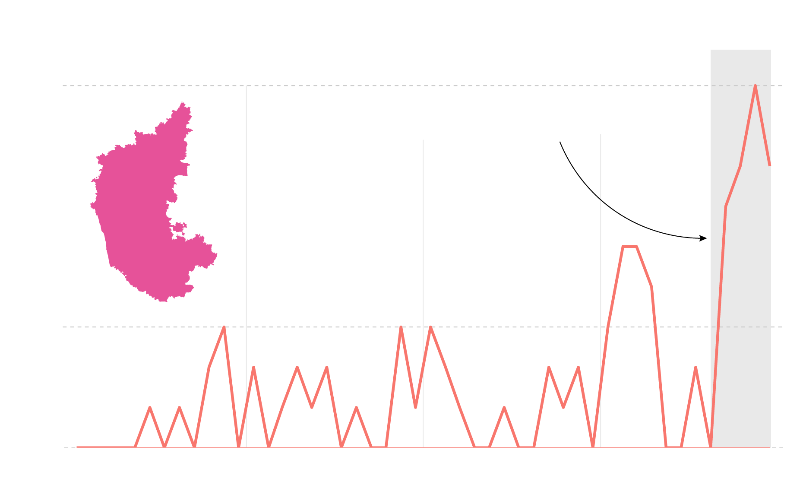
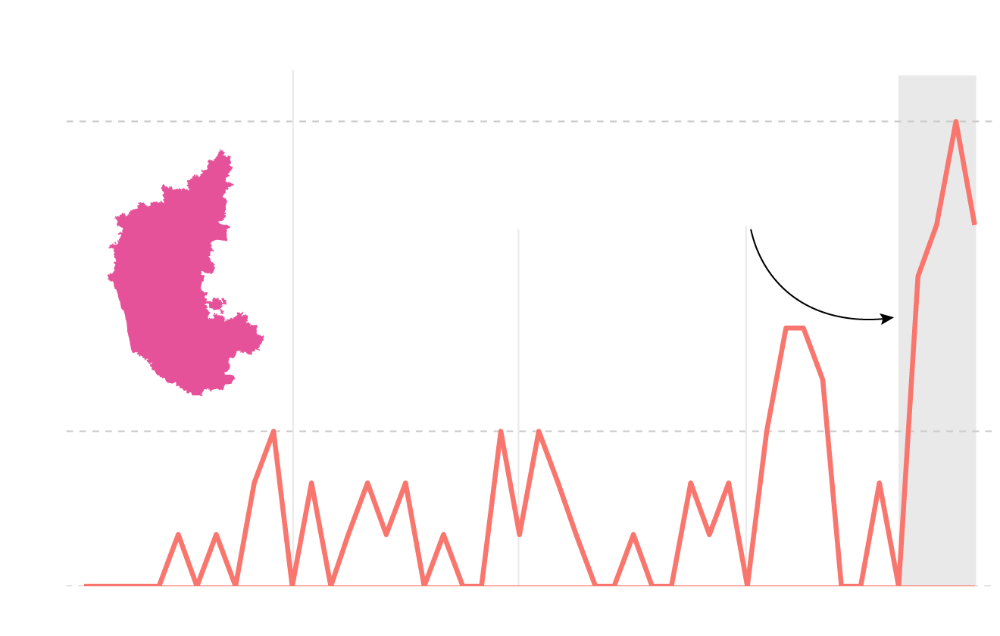

After being re-elected for a second term, The BJP has sharpened the religious divide in the country by making discriminatory and exclusionary policies, such as the Citizenship Amendment Act, which excludes Muslims from the list of refugees coming into India, and the National Registry of Citizens. Around 10 states in India, have already passed an anti-conversion law, which aims to regulate religious conversions, and several states have also contemplated amendments to existing laws.
Anxieties around conversion are typically a narrative that is forced upon the Hindu majority, and this phenomena is rather unique to India. “The Laws themselves have led to very few arrests, but that’s been changing as well.” says, Stuti Manchanda, an author of a paper on the same subject.Religious conversion (or the anxiety surrounding it) has been a prime driver of hate against christians.
Praveen Togadia, the leader of the Vishwa Hindu Parishad, one of India’s most notorious and virulent right wing groups proclaimed that all Indians had once been Hindu but were lured away with coercion and enticements. He also promised to make India 100 percent Hindu. Right-wing discourse on social media also refer to Indian christians as “ricebags”, denigrating them as people who converted to christianity for a bag of rice.
The Evangelical Fellows of India have been collecting data on religious violence against evangelicals, churchgoers and violence that they deem “explicitly targets the religious community.” This data has been determined to be rather conservative, since it does not contain random acts of violence against people who are christian, but instead documents instances of violence of people directly associated or affiliated with a church. An analysis of the data since 2018 collected by the foundation also reveals that there has been a significant growth in anti-christian violence in several states, namely Chhattisgarh, Madhya Pradesh, Karnataka and Haryana.
Karnataka: Bommai's bloody ascent
In September 2021–2 months after coming to power as the chief minister of Karnataka–Basavraj Bommai announced the Protection of Right to Freedom of Religion Act. Discourse around forcible conversions were reaching a boiling point after a politician from the BJP, Goolhati Shekhar claimed that his mother was “forcibly converted.” He also claimed that around twenty thousand villagers from the same district were also converted. This was enough to lend credence to the arguments that many hindu extremists were making, and led to a rise in vigilantism in the same month.

Karnataka saw a rise in hate crimes against Christians after CM
Basavraj Bommai announced anti−conversion laws.
September 2021 saw the highest incidents of targetted harrasment, the same month as the announcement

Karnataka saw a rise in hate crimes against Christians
after CM Bommai announced anti−conversion laws.
September 2021 saw the highest incidents of harrasment, the same month as the announcement

Karnataka saw a rise in hate crimes against Christians after CM
Basavraj Bommai announced anti−conversion laws.
September 2021 saw the highest incidents of targetted harrasment, the same month as the announcement

Karnataka saw a rise in hate crimes against Christians after CM
Basavraj Bommai announced anti−conversion laws.
September 2021 saw the highest incidents of targetted harrasment in, the same month as the announcement
Priests and clergymen like Bhandari were accused of deceiving and converting people, and other members of the community, usually get socially isolated, much like a village in Tanda. In Tanda, villagers were told not to interact with members of the Hindu community, denied access to public drinking water, and were also asked not to use public thoroughfares.
Prominent right-wing groups such as the RSS, Bajrang Dal and the Hindu Jagrana Vedike were involved in organizing the violence. These groups typically mobilize people by spreading rumors, typically around conversion and by demonizing the population. Across the country, many of these groups use dog-whistles, like cow slaughter, or even “love-jihad” in order to engage in vigilantism. In seven out of the 9 instances recorded by the EFI, one of the above groups were involved.
Data for this project was obtained courtsey of the Evangelical Fellows of India.
The charts were created using ggplot2 and cleaned on Adobe Illustrator. Maps were generated on Datawrapper. All code for this project can be found my GitHub.